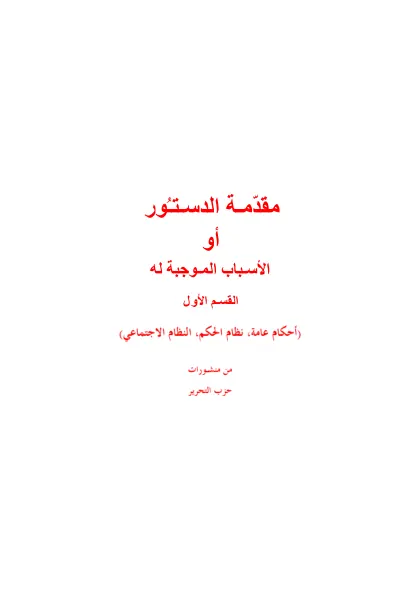

← Maktabah Ilmu · مكتبة العلم

Syekh Taqiyuddin an-Nabhani
مقدمة الدستور - القسم الأول
Muqaddimah ad-Dustur (Jilid 1)
Taqiyuddin an-Nabhani · wafat 1398 H
Tersedia: Arab, Indonesia · 345 halaman
Baca Muqaddimah ad-Dustur (Jilid 1) (مقدمة الدستور - القسم الأول) karya Taqiyuddin an-Nabhani secara gratis di Maktabah Ilmu: teks Arab, Indonesia. Tanpa daftar, tanpa iklan.
Buka kitab iniLihat lemari ilmu
Daftar isi
- المقدمة
- محتويات الكتاب
- آيات الافتتاح
- أحكام عامة
- نظام الحكم
- الخليفة
- المعاونون
- معاون (وزير) التنفيذ
- الولاة
- أمير الجهاد: دائرة الحربية - الجيش
- الأمن الداخلي
- دائرة الخارجية
- دائرة الصناعة
- القضاء
- الجهاز الإداري
- بيت المال
- الإعـلام
- مجلس الأمة (الشورى والمحاسبة)
- النظام الاجتماعي
Sumber: hizb-ut-tahrir.org (PDF resmi)